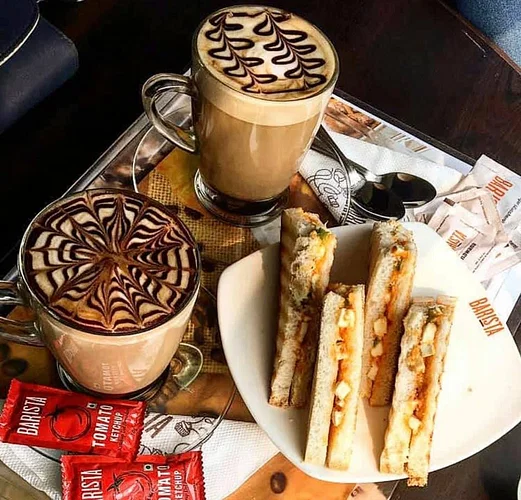
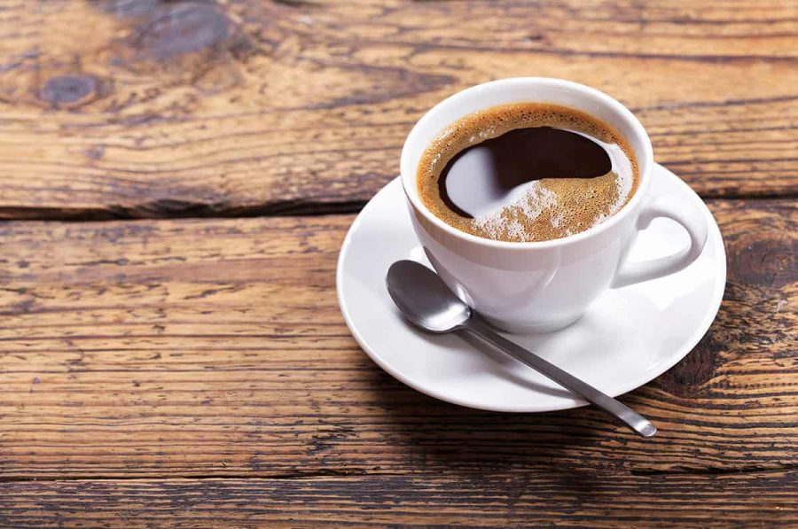
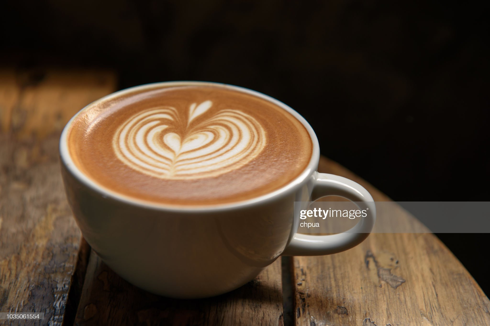
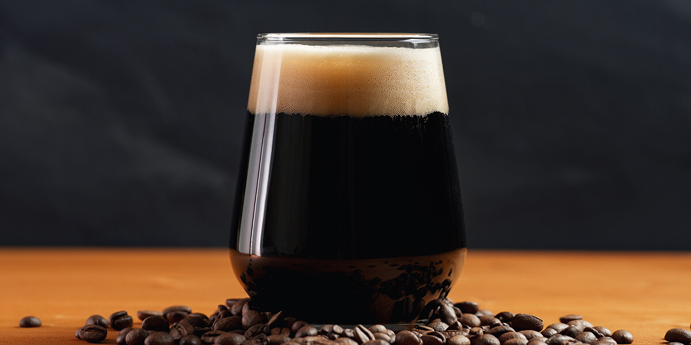

Vietnamese Coffee($500)
Vietnamese iced coffee is a traditional Vietnamese coffee recipe. It is created using coffee roasted between medium and dark. The drink is made by passing hot water through the grounds into a cup that already contains condensed milk. To serve the drink cold, ice is added to the cup
flat white($300)

A flat white is a coffee drink consisting of espresso with microfoam. It is comparable to a latte, but smaller in volume and with less microfoam, therefore having a higher proportion of coffee to milk,
brewed Coffee($300)

let the water come to a full boil, but do not over boil. Turn off the heat source and allow the water to rest a minute before pouring it over the grounds. Coffee usually cools rapidly after being served, depending upon the container from which it is being served.
Americano($500)
The Americano is another popular type of coffee drink, and it's very easy to make! It's just espresso with hot water dripping over it. The name came about during World War II when European baristas added water to their espresso drinks for the American soldiers stationed there. The resulting drink had a smoother, less concentrated flavour than espresso and thus the Americano was born.
cafe au lait($250)

Cafe au lait is a coffee beverage that is made with dark roast coffee and steamed milk. The milk is generally warmed up and frothed before it is added to the coffee. Cafe au lait is a popular type of coffee drink in France, where it is often served at breakfast.
Cappuccino ($300)
Cappuccinos are a classic Italian type of coffee drink made of espresso, steamed milk, and thick foam in equal parts. The name comes from the resemblance to the hoods worn by Capuchin monks. Making cappuccino is relatively easy and can be done at home too if you know how to make espresso. And if you don’t then you can follow Our Guide To Home Espresso to learn how to make it.
Latte($500)

A latte is an espresso with steamed milk and a dollop of milk foam on top. This beverage is more prevalent in America than other coffee drinks like cappuccinos because it contains less foam, making it smoother and gentler for those with sensitive palettes. And if you want to spice up your latte, add some flavouring syrup. To make an iced version of this drink, simply pour espresso and steamed milk over ice cubes.
red-eye-coffee($250)
Red Eye Coffee is a favourite among coffee drinkers because of its unique and rich flavour. Adding espresso shots to regular coffee creates this signature type of coffee drink that gives you the boost you need to wake up in the morning. Red Eyes are perfect for those who love strong coffee but don't want to drink an entire pot all by themselves; plus, they make excellent morning beverages.
Espresso($300)

Espresso is made by forcing nearly boiling water through finely-ground coffee beans, which results in a concentrated, syrup-like coffee drink. This is the base for many Italian beverages in coffee shops. When compared to regular brewed coffee, espresso is much stronger than the other types of coffee drinks. Espressos are enjoyed in shots where a single shot is one ounce and a long (single and double) shot is two ounces in amount, respectively.